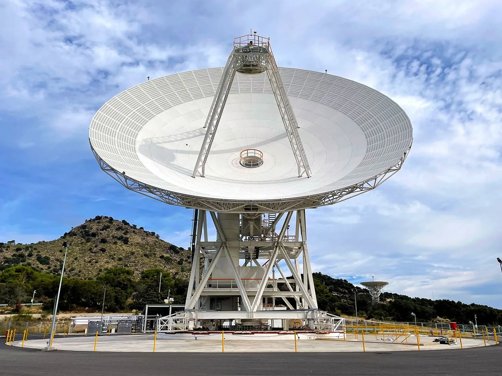

TRES PREGUNTAS QUE SE CONECTAN
Tres rutas para entender cómo cambió nuestra relación con el universo.
Cada ruta parte de una pregunta distinta, pero las tres se conectan: entender mejor exigió nuevas formas de observar, comunicarse y construir.
 01
01
PENSAMIENTO CRÍTICO Y PERCEPCIÓN
Cómo cambia nuestra visión cuando cambia la evidencia
La ruta sigue cómo nuevos instrumentos, mediciones y descubrimientos ampliaron lo que podía comprobarse. Cuando la evidencia ya no encajaba con una idea previa, los modelos tuvieron que revisarse: así evolucionaron la percepción humana del universo y las formas de evaluar lo que creemos saber.
Explorar pensamiento y percepción →
02TELECOMUNICACIONES
Explorar más lejos exigió comunicarnos mejor
Cada misión más distante convirtió la comunicación en un problema nuevo: señales más débiles, mayores retrasos y menos contacto directo. La exploración obligó a adaptar radio, antenas, telemetría, redes y después comunicaciones ópticas para mantener conectividad a distancias cada vez mayores.
Explorar telecomunicaciones → 03
03
CIENCIA DE MATERIALES
Ir más lejos obligó a construir de otra manera
Con mejores comunicaciones y objetivos más ambiciosos, las naves tuvieron que soportar más velocidad, calor, frío, radiación y tiempo de misión. Eso impulsó materiales y procesos capaces de reducir masa, resistir ambientes extremos y hacer posibles estructuras más ligeras, eficientes y adaptables.
Explorar ciencia de materiales →